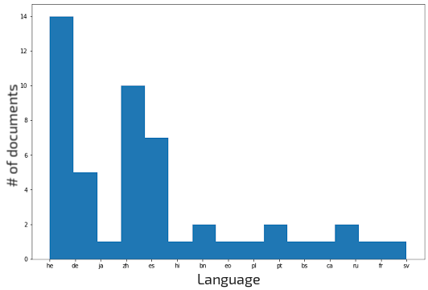
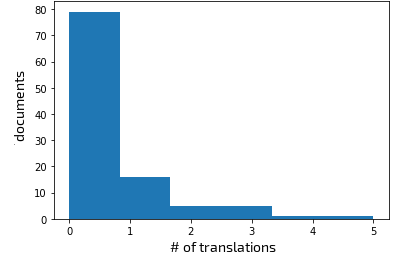

Appendix C — Interpretability in Human Translation Workflows
C.1 Machine Translation Post-editing for Typologically Diverse Languages
C.1.1 Subject Information
During the setup of our experiment, one translator refused to carry out the main task after the warmup phase, and another was substituted by our choice. Both translators were working in the English-Italian direction and were found to make heavy usage of copy-pasting during the warmup stage, suggesting an incorrect utilization of the platform in light of our guidelines. Both translators, which we identified as T\(_2\) and T\(_3\) for Italian, were replaced by T\(_5\) and T\(_4\) respectively. Table C.1 reflects the final translation selection for all languages, with the information collected by means of the pre-task questionnaire.
| Gender | Age | Degree | Position | En Level | YoE | PE YoE | % PE | ||
|---|---|---|---|---|---|---|---|---|---|
| Arabic | T\(_1\) | M | 35-44 | BA | Freelancer | C2 | > 15 | 2-5 | 20%-40% |
| T\(_2\) | M | 25-34 | BA | Employed | C2 | 5-10 | 2-5 | 60%-80% | |
| T\(_3\) | M | 25-34 | MA | Freelancer | C1 | 5-10 | < 2 | 20%-40% | |
| Dutch | T\(_1\) | M | 25-34 | MA | Freelancer | C2 | 5-10 | 5-10 | 60%-80% |
| T\(_2\) | F | 35-44 | MA | Freelancer | C1 | 10-15 | 5-10 | 40%-60% | |
| T\(_3\) | F | 25-34 | MA | Freelancer | C2 | 2-5 | 2-5 | 20%-40% | |
| Italian | T\(_1\) | F | 25-34 | MA | Employed | C1 | 5-10 | 5-10 | 20%-40% |
| T\(_5\) | F | 25-34 | MA | Freelancer | C1 | 2-5 | 2-5 | 40%-60% | |
| T\(_4\) | F | 35-44 | BA | Freelancer | C2 | 10-15 | 5-10 | > 80% | |
| Turkish | T\(_1\) | F | 25-34 | BA | Freelancer | C2 | 5-10 | 2-5 | < 20% |
| T\(_2\) | F | 25-34 | BA | Freelancer | C1 | 5-10 | 5-10 | < 20% | |
| T\(_3\) | M | 25-34 | High school | Freelancer | C2 | 10-15 | < 2 | < 20% | |
| Ukrainian | T\(_1\) | F | 35-44 | MA | Employed | C1 | 5-10 | 5-10 | 20%-40% |
| T\(_2\) | M | 35-44 | MA | Employed | C1 | 10-15 | 10-15 | 20%-40% | |
| T\(_3\) | M | 35-44 | High school | Employed | B2 | 2-5 | 2-5 | 20%-40% | |
| Vietnamese | T\(_1\) | F | 25-34 | MA | Employed | C2 | 10-15 | 5-10 | 40%-60% |
| T\(_2\) | F | 25-34 | BA | Freelancer | C1 | 5-10 | < 2 | 20%-40% | |
| T\(_3\) | F | 25-34 | MA | Employed | C1 | 2-5 | < 2 | < 20% |
C.1.2 Translation Guidelines
An extract of the translation guidelines provided to the translators follows. The full guidelines are provided in the additional materials.
Fill in the pre-task questionnaire before starting the project. In this experiment, your goal is to complete the translation of multiple files in one of two possible translation settings. Please, complete the tasks on your own, even if you know another translator that might be working on this project. The translation setting alternates between texts, with each text requiring a single translation in the assigned setting. The two translation settings are:
- Translation from scratch. Only the source sentence is provided, you are to write the translation from scratch.
- Post-editing. The source sentence is provided alongside a translation produced by an MT system. You are to post-edit this MT output. Post-edit the text so you are satisfied with the final translation (the required quality is publishable quality). If the MT output is too time-consuming to fix, you can delete it and start from scratch. However, please do not systematically delete the provided MT output to give your own translation.
Important: All editing MUST happen in the provided PET interface: that is, working in other editors and copy-pasting the text back to PET is NOT ALLOWED, because it invalidates the experiment. This is easy to spot in the log data, so please avoid doing this. Complete the translation of all files sequentially, i.e. in the order presented in the tool. DO NOT SKIP files at your own convenience. Make sure that ALL files are translated when you deliver the tasks.
The aim is to produce publishable professional quality translations for both translation settings. Thus, please translate to your best abilities. You can return to the files and self-review as many times as you think it is necessary. Important: The time invested to translate is recorded while the active unit (sentence) is in editing mode (yellow background). Therefore:
Only start to translate when you are in editing mode (yellow background). In other words, do not start thinking how you will translate a sentence when the active unit is not yet in editing mode (green or red background).
Do not leave a unit in editing mode (yellow background) while you do something else. If you need to do something unrelated in the middle of a translation then go out of editing mode and come back to editing mode when you are ready to resume translating.
First you will be translating a warmup task, and then the main task. When you are translating each file, you can consult the source text by looking up the url in the Excel files that we have sent for reference.
In order to find the correct terminology for the translation you can consult any source in the Internet. Important: However, it is NOT ALLOWED to use any MT engine to find terms or alternatives to translations (such as Google Translate, DeepL, MS Translator or any MT engine available in your language). Using MT engines invalidates the experiment, and will be detected in the log data. Please fill-in the post-task questionnaire ONLY ONCE after completing all the translation tasks (both warmup and main tasks).
C.1.3 Details on Document Selection and Preprocessing
Document selection Table C.2 present the distribution of selected documents from the Flores-101 devtest split based on their domain and the number of sentences that compose them. The first goal in the selection process was to preserve a rough balance between the three categories while including mostly 4 and 5-sentence docs which are faster to edit in PET (no need to frequently close and reopen an editing window). Another objective of the selection was to minimize the chance of translators finding the translated version of the Wikipedia article from which documents were taken and copied from there, despite our guidelines. We thus scrape the articles from Wikipedia and assess the number of available translations. Among the selected documents, only a small subset has translations in other languages (see Figure C.1 top, an article can have multiple languages), mainly in Hebrew (14), Chinese (10), Spanish (7) and German (5) respectively. Considering the total number of translations for every article (Figure C.1 bottom), we see that roughly 75% of them (79 docs) have no translations. We consider this satisfactory as proof there should not be a large amount of possible copying involved, and we follow up on this evaluation by also ensuring that no repeated copy-paste patterns are present in keylogs after the warmup stage.
| Type | WN | WV | WB | # Sent. | # Words |
|---|---|---|---|---|---|
| 3S | 11 | 13 | 11 | 105 | 2168 |
| 4S | 14 | 8 | 13 | 140 | 3214 |
| 5S | 12 | 13 | 12 | 185 | 3826 |
| Tot. | 37 | 34 | 36 | 450 | 9626 |


Filtering of Outliers For our analysis of Section 8.4, we only use sentences with an editing time lower than 45 minutes, which was selected heuristically as a reasonably high threshold to allow for extensive searching and thinking. In the following, we present the identifiers of the sentences that were filtered out during this process. E.g. 54.1 means the first sentence of document 54, having item_id equal to flores101-main-541 in the dataset. Note that the sentences were outliers only for 2/6 languages and were all different, indicating no systematic issues in the sample: ARA: 54.1, 100.3, VIE: 3.1, 3.2, 24.3, 28.4, 33.1, 33.2, 40.3, 41.2, 50.3, 100.1, 102.1, 106.1, 107.2, 107.4. The 17 sentences were removed for all modalities and languages in the analysis of Section 8.4 to preserve the validity of our comparison, representing a loss of roughly 4% of the total available data, a tolerable amount for our analysis.
Fields Description Table C.3 presents the set of fields that were collected for every entry of the DivEMT dataset. The fields related to keystrokes, times, pauses, annotations and visit order were extracted from the event log of PET .per files, while edits information and other MT quality metrics were computed in a second moment with the help of widely-used libraries.
| Field name | Description |
|---|---|
unit_id, flores_id, subject_id, task_type |
Identifiers for the item, respective FLORES-101 sentence, translator and translation mode. |
src_text |
The original source sentence extracted from Wikinews, wikibooks or wikivoyage. |
mt_text |
MT output sentence before post-editing, present only if task_type is 'pe'. |
tgt_text |
Final sentence produced by the translator (either from scratch or post-editing mt_text) |
aligned_edit |
Aligned visual representation of the machine translation and its post-edit with edit operations |
edit_time |
Total editing time for the translation in seconds. |
k_letter, k_digit, k_white, k_symbol, k_nav |
Number of keystrokes for various key types (letters, digits, keystrokes, whitespaces, punctuation, navigation keys) during the translation. |
k_erease, k_copy, k_paste, k_cut, k_do |
Number of keystrokes for erease (backspace, cancel), copy, paste, cut and Enter actions during the translation. |
k_total |
Total number of all keystroke categories during the translation. |
n_pause_geq_N, len_pause_geq_N |
Number and length of pauses longer than 300ms and 1000ms during the translation. |
num_annotations |
Number of times the translator focused the target sentence texbox during the session. |
n_insert, n_delete, n_substitute, n_shift, tot_shifted_words, tot_edits, hter |
Granular editing metrics and overall HTER computed using the Tercom library. |
cer |
Character-level HTER score computed between the MT and post-edited outputs. |
bleu, chrf |
Sentence-level BLEU and ChrF scores between MT and post-edited fields computed using the SacreBLEU library with default parameters. |
time_per_char, key_per_char, words_per_hour, words_per_minute |
Edit time per source character, expressed in seconds. Proportion of keys per character needed to perform the translation. Amount of source words translated or post-edited per hour/minute |
subject_visit_order |
Id denoting the order in which the translator accessed documents in the interface. |
C.1.4 Other Measurements
Automatic Evaluation of NMT Systems The selection of systems used in this study was driven by a broader evaluation procedure covering more models, metrics and target languages. Table C.4 presents the overall results of our evaluation. We use HuggingFace’s transformers library (Wolf et al., 2020) for all neural models, using the default decoding settings without further fine-tuning. All metrics were computed using the default settings of SacreBLEU (Post, 2018) and comet (Rei et al., 2020).
| System | BLEU | chrF2 | TER | chrF2++ | COMET | |
|---|---|---|---|---|---|---|
| Arabic | M2M100 | 19.2 | 50.9 | 69.2 | 47 | 0.417 |
| MarianNMT | 22.7 | 54.2 | 64.7 | 50.4 | 0.483 | |
| mBART-50 | 17 | 48.5 | 69.1 | 44.8 | 0.452 | |
| GTrans | 34.1 | 65.6 | 52.8 | 61.9 | 0.737 | |
| Dutch | M2M100 | 21.3 | 52.9 | 66.1 | 49.8 | 0.405 |
| MarianNMT | 25 | 56.9 | 62.5 | 53.8 | 0.543 | |
| mBART-50 | 22.6 | 53.9 | 63.7 | 50.9 | 0.532 | |
| DeepL | 28.7 | 59.5 | 59.5 | 56.6 | 0.67 | |
| GTrans | 29.1 | 60 | 58.5 | 57.1 | 0.667 | |
| Indonesian | M2M100 | 35.9 | 63.1 | 47.3 | 60.8 | 0.614 |
| MarianNMT | 38.5 | 65.6 | 46.5 | 63.3 | 0.671 | |
| mBART-50 | 35.9 | 63.3 | 47.7 | 61.1 | 0.706 | |
| GTrans | 51.5 | 73.6 | 34.5 | 71.9 | 0.894 | |
| Italian | M2M100 | 23.6 | 53.9 | 63.2 | 51 | 0.51 |
| MarianNMT | 27.5 | 57.6 | 58.9 | 54.8 | 0.642 | |
| mBART-50 | 24.4 | 54.7 | 61.2 | 51.8 | 0.648 | |
| DeepL | 33 | 61 | 54 | 58.5 | 0.795 | |
| GTrans | 32.8 | 61.4 | 53.6 | 58.8 | 0.781 | |
| Japanese | M2M100 | 24.5 | 32.2 | 123.3 | 26 | 0.389 |
| mBART | 27.1 | 35.4 | 123 | 28.3 | 0.538 | |
| DeepL | 41.3 | 46.8 | 108 | 37 | 0.75 | |
| GTrans | 38.4 | 44.7 | 101.5 | 33.9 | 0.683 | |
| Polish | M2M100 | 16.1 | 46.5 | 74.2 | 43.1 | 0.486 |
| MarianNMT | 19.3 | 49.9 | 70.5 | 46.6 | 0.648 | |
| mBART-50 | 17.4 | 48.2 | 72.4 | 44.9 | 0.603 | |
| DeepL | 24 | 54.3 | 66.4 | 51.1 | 0.832 | |
| GTrans | 24.4 | 54.6 | 64.6 | 51.4 | 0.804 | |
| Russian | M2M100 | 22.5 | 51.1 | 65.6 | 48.1 | 0.427 |
| MarianNMT | 25.4 | 53.5 | 64.3 | 50.7 | 0.537 | |
| mBART | 24.8 | 52.6 | 63.7 | 49.7 | 0.541 | |
| DeepL | 35.9 | 61.8 | 53.3 | 59.3 | 0.79 | |
| GTrans | 33 | 60.5 | 55.2 | 57.7 | 0.731 | |
| Turkish | M2M100 | 20.3 | 53.9 | 65.2 | 50.1 | 0.686 |
| MarianNMT | 26.3 | 59.8 | 58.8 | 55.8 | 0.881 | |
| mBART-50 | 18.8 | 52.7 | 67.5 | 48.7 | 0.755 | |
| GTrans | 35 | 65.5 | 50.4 | 62.2 | 1 | |
| Ukrainian | M2M100 | 21.9 | 51.4 | 65.8 | 48.3 | 0.463 |
| MarianNMT | 20 | 48.8 | 69.2 | 45.7 | 0.427 | |
| mBART-50 | 21.9 | 50.7 | 67.9 | 47.7 | 0.587 | |
| GTrans | 31.1 | 59.8 | 55.9 | 56.8 | 0.758 | |
| Vietnamese | M2M100 | 33.3 | 52.3 | 52.4 | 52.1 | 0.43 |
| MarianNMT | 26.7 | 45.7 | 60.2 | 45.6 | 0.117 | |
| mBART-50 | 34.7 | 54 | 50.7 | 53.8 | 0.608 | |
| GTrans | 45.1 | 61.9 | 41.8 | 61.9 | 0.724 |
Inter-subject Variability in Translation Times Although the variability across different subjects working on the same language directions is not the main concern of our investigation, we produce Figure C.2 (an expanded version of Figure 8.2) to visualize the inter-subject variability for translation times. We observe that the variability across different translators is more pronounced when translating from scratch and that the overall trend of speed improvements associated with PE is mostly preserved (with few exceptions related to the PE\(_2\) modality).
| English | |
| Inland waterways can be a good theme to base a holiday around. | |
| Arabic | |
| HT | يمكن أن تكون الممرات المائية الداخلية خياراً جيداً لتخطيط عطلة حولها. |
| PE1 | mt: يمكن أن تكون الممرات المائية الداخلية موضوعًا جيدًا لإقامة عطلة حولها |
| pe: يمكن** أن تكون الممرات المائية الداخلية مظهرًا جيدًا لإقامة عطلة حولها | |
| PE2 | mt: يمكن أن تكون السكك الحديدية الداخلية موضوعًا جيدًا لإقامة عطلة حول |
| pe: قدتكونالممراتالمائيةالداخليةمكانًاجيدًالقضاءعطلةحولها | |
| Dutch | |
| HT | Binnenlandse waterwegen kunnen een goed thema zijn voor een vakantie. |
| PE1 | MT: De binnenwateren kunnen een goed thema zijn om een vakantie omheen te baseren. |
| PE: Binnenwateren kunnen een goede vakantiebestemming zijn. | |
| PE2 | MT: Binnenwaterwegen kunnen een goed thema zijn om een vakantie rond te zetten. |
| PE: Binnenwaterwegen kunnen een goed thema zijn om een vakantie rond te organiseren. | |
| Italian | |
| HT | I corsi d'acqua dell'entroterra possono essere un ottimo punto di partenza da cui organizzare una vacanza. |
| PE1 | MT: Trasporto fluviale può essere un buon tema per basare una vacanza in giro. |
| PE: I canali di navigazione interna possono essere un ottimo motivo per cui intraprendere una vacanza. | |
| PE2 | MT: I corsi d’acqua interni possono essere un buon tema per fondare una vacanza. |
| PE: I corsi d’acqua interni possono essere un buon tema su cui basare una vacanza. | |
| Turkish | |
| HT | İç bölgelerdeki su yolları, tatil planı için iyi bir tema olabilir. |
| PE1 | MT: İç su yolları, bir tatili temel almak için iyi bir tema olabilir. |
| PE: İç su yolları, bir tatil planı yapmak için iyi bir tema olabilir. | |
| PE2 | MT: İç suyolları, tatil için uygun bir tema olabilir. |
| PE: İç sular tatil için uygun bir tema olabilir. | |
| Ukrainian | |
| HT | Можна спланувати вихідні, взявши за основу подорож внутрішніми водними шляхами. |
| PE1 | MT: Внутрішні водні шляхи можуть стати гарною темою для відпочинку навколо. |
| PE: Внутрішні водні шляхи можуть стати гарною темою для проведення вихідних. | |
| PE2 | MT: Водні шляхи можуть бути хорошим об ’єктом для базування відпочинку навколо. |
| PE: Місцевість навколо внутрішніх водних шляхів може бути гарним вибором для організації відпочинку. | |
| Vietnamese | |
| HT | Du lịch trên sông có thể là một lựa chọn phù hợp cho kỳ nghỉ. |
| PE1 | MT: Đường thủy nội địa có thể là một chủ đề hay để tạo cơ sở cho một kỳ nghỉ xung quanh. |
| PE: Đường thủy nội địa có thể là một ý tưởng hay để lập kế hoạch cho kỳ nghỉ. | |
| PE2 | MT: Các tuyến nước nội địa có thể là một chủ đề tốt để xây dựng một kì nghỉ. |
| PE: Du lịch bằng đường thủy nội địa là một ý tưởng nghỉ dưỡng không tồi. | |
| English | |
| The Internet combines elements of both mass and interpersonal communication. | |
| Arabic | |
| HT | يجمع الإنترنت بين عناصر وسائل الاتصال العامة والشخصية على حدٍ سواء |
| PE1 | mt: تجمع الإنترنت بين عناصر الاتصال الجماهيري والشخصي |
| pe: يجمع الإنترنت بين عناصر الاتصال الجماهيري والشخصي | |
| PE2 | mt: إنترنت تجمع عناصر التواصل الجماعي والتواصل الشخصي |
| pe: تجمع شبكة الإنترنت عناصر التواصل الجماعي والتواصل الشخصي | |
| Dutch | |
| HT | Het internet combineert elementen van zowel massa- en intermenselijke communicatie. |
| PE1 | MT: Het internet combineert elementen van zowel massa- als interpersoonlijke communicatie. |
| PE: Het internet combineert elementen van zowel massa- als interpersoonlijke communicatie. | |
| PE2 | MT: Het internet combineert elementen van massa- en interpersoonlijke communicatie. |
| PE: Het internet combineert elementen van massa- en interpersoonlijke communicatie. | |
| Italian | |
| HT | Internet combina elementi di comunicazione sia di massa sia interpersonale. |
| PE1 | MT: Internet combina elementi di comunicazione di massa e interpersonali. |
| PE: Internet combina elementi di comunicazione di massa e interpersonale. | |
| PE2 | MT: Internet combina elementi di comunicazione di massa e interpersonale. |
| PE: Internet combina elementi di comunicazione di massa e interpersonale. | |
| Turkish | |
| HT | İnternet hem kitlesel hem de bireysel iletişim öğelerini birleştiriyor. |
| PE1 | MT: İnternet, hem kitle hem de kişiler arası iletişimin unsurlarını birleştirir. |
| PE: İnternet, hem kitleler hem de kişiler arası iletişimin unsurlarını birleştirir. | |
| PE2 | MT: İnternet hem kitlesel hem de kişisel iletişim unsurlarını birleştiriyor. |
| PE: İnternet hem kitlesel hem de kişisel iletişim unsurlarını birleştiriyor. | |
| Ukrainian | |
| HT | В інтернеті поєднуються елементи групового спілкування та особистого спілкування. |
| PE1 | MT: Інтернет поєднує в собі елементи як масового, так і міжособистісного спілкування. |
| PE: Інтернет поєднує в собі елементи як масового, так і міжособистісного спілкування. | |
| PE2 | MT: Інтернет об ’єднує як масову, так і міжлюдську комунікацію. |
| PE: Інтернет поєднує в собі елементи як групової, так і особистої комунікації. | |
| Vietnamese | |
| HT | Internet là nơi tổng hợp các yếu tố của cả phương tiện truyền thông đại chúng và giao tiếp liên cá nhân. |
| PE1 | MT: Internet kết hợp các yếu tố của cả giao tiếp đại chúng và giao tiếp giữa các cá nhân. |
| PE: Internet kết hợp các yếu tố của cả truyền thông đại chúng và giao tiếp giữa các cá nhân. | |
| PE2 | MT: Internet kết hợp những yếu tố của sự giao tiếp quần chúng và giao tiếp giữa người với người. |
| PE: Internet kết hợp những yếu tố của cả việc giao tiếp đại chúng và giao tiếp cá nhân. | |
| Subject | Coefficient |
|---|---|
ara_t1 |
0.281 |
ara_t2 |
-0.384 |
ara_t3 |
-0.103 |
nld_t1 |
0.001 |
nld_t2 |
-0.459 |
nld_t3 |
0.458 |
ita_t1 |
0.086 |
ita_t4 |
0.350 |
ita_t5 |
-0.436 |
tur_t1 |
-0.381 |
tur_t2 |
0.272 |
tur_t3 |
0.109 |
ukr_t1 |
0.077 |
ukr_t2 |
0.314 |
ukr_t3 |
-0.391 |
vie_t1 |
0.012 |
vie_t2 |
0.176 |
vie_t3 |
-0.188 |
subject_id variable, representing the identity of the translator performing the translation.
C.1.5 Data Filtering and Feature Significance
We log-transform the dependent variable, edit time in seconds, given its long right tail. The models are built by adding one element at a time, and checking whether such addition leads to a significantly better model with AIC (i.e. if the score gets reduced by at least 2). Our random effects structure includes random intercepts for different segments (nested with documents) and translators, as well as a random slope for modality over individual segments. We start with an initial model that just includes the two random intercepts (by-translator and by-segment) and proceed by (i) finding significance for nested document/segment random effect; (ii) adding fixed predictors one by one; (iii) adding interactions between fixed predictors; and (iv) adding the random slopes.1 From this sequential procedure, we obtain the resulting model. When checking the homoscedasticity and normality of residuals assumptions (Figure C.3 and Figure C.4), we find the latter is not fulfilled. Consequently, we remove data points for which observations deviate by more than 2.5 standard deviations from the predicted value by the model (2.4% of the data) and refit the best model on this subset, in order to find out whether any of the effects were due to these outliers. The resulting trends do not change significantly in this final model, in which residuals are normally distributed. As a final sanity check, in Table C.7 we measure the effect of subject identity on edit times and find no systematic patterns across languages.
C.2 Word-level Quality Estimation for Machine Translation Post-editing
C.2.1 Filtering Details for QE4PE Data
- Documents should contain between 4 and 10 segments, each containing 10-100 words (959 docs). This ensures that all documents are roughly uniform in terms of size and complexity to maintain a steady editing flow Section 9.2.5.
- The average segment-level QE score predicted by XCOMET-XXL is between 0.3 and 0.95, with no segment below 0.3 (429 docs). This forces segments to have a decent but still imperfect quality, excluding fully wrong translations.
- At least 3 and at most 20 errors spans per document, with no more than 30% of words in the document being highlighted (351 docs). This avoids overwhelming the editor with excessive highlighting, while still ensuring error presence.
The same heuristics were applied to both translation directions, selecting only documents matching our criteria in both cases.
C.2.2 Additional Details and Statistics
| Identifier | Job | Eng. Lvl | Trans. YoE | Post-edit YoE | Post-edit % | Adv. CAT YoE | MT good/bad for: | Post-edit comment |
|---|---|---|---|---|---|---|---|---|
ita-nohigh-fast |
FL (FT) | C1 | 2-5 | 2-5 | 100% | Often | G: Productivity, quality, repetitive work. | PE better than from scratch when consistency is needed. |
ita-nohigh-avg |
FL (PT) | C1 | >10 | <2 | 20% | Often | G: Productivity, repetitive work. B: less creative. | PE produces unnatural sentences. |
ita-nohigh-slow |
FL (PT) | C2 | >10 | 2-5 | 40% | Sometimes | G: creativity. | Good for time saving. |
ita-oracle-fast |
FL (FT) | C2 | 5-10 | 2-5 | 60% | Sometimes | G: Productivity, repetitive work. B: less creative. | Good for productivity, humans always needed. |
ita-oracle-avg |
FL (FT) | C2 | 5-10 | 5-10 | 20% | Always | G: productivity, terminology. | Good for tech docs, not for articulated texts. |
ita-oracle-slow |
FL (FT) | C2 | 2-5 | 5-10 | 80% | Always | G: Productivity, repetitive work. | Useful for consistency and productivity, unless creativity is needed. |
ita-unsup-fast |
FL (FT) | C1 | <2 | <2 | 60% | Often | G: Productivity, terminology. B: less creative. | Humans will always be needed in translation. |
ita-unsup-avg |
FL (FT) | C1 | >10 | 2-5 | 60% | Often | G: Productivity, repetitive work. B: less creative. | An opportunity for translators. |
ita-unsup-slow |
FL (FT) | C1 | 5-10 | 5-10 | 80% | Always | G: Productivity, repetitive work. B: less creative. | Good for focusing on detailed/cultural/creative aspects of translations. |
ita-sup-fast |
FL (PT) | C1 | >10 | 2-5 | 40% | Often | G: Productivity, quality, repetitive work, terminology. | Improves quality and consistency. |
ita-sup-avg |
FL (FT) | C1 | >10 | 5-10 | 100% | Always | G: Productivity, repetitive work. B: less creative. | Consistency improved, but less variance means less creativity. |
ita-sup-slow |
FL (FT) | C1 | >10 | 2-5 | 20% | Always | G: Productivity, creativity, quality, repetitive work. | Good for productivity, but does not work on creative texts. |
nld-nohigh-fast |
FL (FT) | C1 | >10 | >10 | 40% | Often | G: Productivity, terminology. B: creativity. | Widespread but still too literal |
nld-nohigh-avg |
FL (FT) | C2 | >10 | 2-5 | 40% | Always | G: Repetitive work. B: creativity, often wrong, worse quality. | Increase in productivity to save on costs brings down quality. |
nld-nohigh-slow |
FL (FT) | C2 | >10 | 5-10 | 100% | Often | G: Creativity, quality, repetitive work, terminology. | Working with MT can be creative beyond PE. |
nld-oracle-fast |
FL (FT) | C1 | 5-10 | 5-10 | 80% | Always | G: Productivity, quality, repetitive work, terminology. | Good for tech docs and repetition. |
nld-oracle-avg |
FL (FT) | C2 | >10 | 2-5 | 40% | Always | B: less creative, less productive, often wrong | Bad MT is worse than no MT for specialized domains. |
nld-oracle-slow |
FL (FT) | C2 | >10 | 2-5 | 60% | Often | G: Productivity, repetitive work. B: cultural references. | More productivity at the cost of idioms and cultural factors. |
nld-unsup-fast |
FL (FT) | C2 | 5-10 | 2-5 | 40% | Often | G: all. B: often wrong, worse quality. | PE makes you less in touch with the texts and often poorly paid. |
nld-unsup-avg |
FL (FT) | C2 | 5-10 | 2-5 | 60% | Sometimes | G: Productivity, quality, repetitive work, terminology. B: wrong. | Practical but less effective for longer passages. |
nld-unsup-slow |
FL (FT) | C2 | >10 | 2-5 | 40% | Always | G: repetitive work, productivity, terminology | Improves consistency and productivity if applied well. |
nld-sup-fast |
FL (FT) | C2 | >10 | 5-10 | 60% | Often | G: repetitive work, creativity, terminology | Useful, but worries about job loss |
nld-sup-avg |
FL (FT) | C2 | >10 | 10 | 60% | Sometimes | G: terminology, creativity | Useful for inspiration on better translations |
nld-sup-slow |
FL (FT) | C1 | 5-10 | 5-10 | 80% | Always | G: repetitive work, productivity | Better productivity at the cost of creativity. |
| Highlights statements | ||||||||||
|---|---|---|---|---|---|---|---|---|---|---|
| Identifier | MT good / fluent / accurate | High. accurate / useful | Interface clear | Task difficult | \(\uparrow\) Speed? | \(\uparrow\) Quality? | \(\uparrow\) Effort? | \(\uparrow\) Influence? | \(\uparrow\) Spot errors? | \(\uparrow\) Enjoy? |
ita-nohigh-fast |
4 / 0.8 / 0.8 | - / - | 5 | 1 | - | - | - | - | - | - |
ita-nohigh-avg |
3 / 0.6 / 0.4 | - / - | 2 | 4 | - | - | - | - | - | - |
ita-nohigh-slow |
3 / 0.8 / 0.8 | - / - | 1 | 5 | - | - | - | - | - | - |
ita-oracle-fast |
5 / 0.4 / 0.8 | 4 / 4 | 4 | 5 | 5 | 2 | 1 | 1 | 1 | 4 |
ita-oracle-avg |
3 / 0.4 / 0.6 | 2 / 1 | 2 | 3 | 1 | 1 | 4 | 1 | 1 | 1 |
ita-oracle-slow |
3 / 0.6 / 0.6 | 2 / 2 | 2 | 5 | 1 | 1 | 1 | 1 | 4 | 1 |
ita-unsup-fast |
3 / 0.8 / 0.6 | 3 / 2 | 4 | 5 | 3 | 3 | 3 | 2 | 2 | 2 |
ita-unsup-avg |
3 / 0.6 / 0.6 | 3 / 3 | 3 | 5 | 2 | 3 | 2 | 1 | 1 | 3 |
ita-unsup-slow |
3 / 0.4 / 0.6 | 2 / 2 | 3 | 4 | 2 | 2 | 3 | 3 | 4 | 4 |
ita-sup-fast |
3 / 0.4 / 0.4 | 2 / 1 | 2 | 2 | 1 | 1 | 3 | 1 | 2 | 2 |
ita-sup-avg |
3 / 0.4 / 0.4 | 2 / 2 | 3 | 5 | 3 | 2 | 4 | 3 | 3 | 4 |
ita-sup-slow |
3 / 0.6 / 0.6 | 2 / 2 | 1 | 2 | 2 | 1 | 1 | 4 | 4 | 1 |
nld-nohigh-fast |
3 / 0.2 / 0.4 | - / - | 4 | 4 | - | - | - | - | - | - |
nld-nohigh-avg |
2 / 0.4 / 0.6 | - / - | 4 | 5 | - | - | - | - | - | - |
nld-nohigh-slow |
2 / 0.2 / 0.4 | - / - | 3 | 5 | - | - | - | - | - | - |
nld-oracle-fast |
3 / 0.6 / 0.6 | 2 / 1 | 3 | 2 | 2 | 2 | 2 | 1 | 1 | 1 |
nld-oracle-avg |
3 / 0.8 / 0.6 | 4 / 3 | 3 | 4 | 3 | 3 | 3 | 3 | 2 | 3 |
nld-oracle-slow |
3 / 0.6 / 0.4 | 3 / 1 | 3 | 4 | 1 | 1 | 1 | 1 | 1 | 3 |
nld-unsup-fast |
3 / 0.6 / 0.8 | 3 / 2 | 4 | 4 | 1 | 3 | 1 | 1 | 2 | 1 |
nld-unsup-avg |
3 / 0.6 / 0.6 | 4 / 3 | 2 | 4 | 3 | 3 | 4 | 3 | 2 | 3 |
nld-unsup-slow |
1 / 0.4 / 0.4 | 2 / 4 | 1 | 4 | 4 | 4 | 3 | 2 | 2 | 3 |
nld-sup-fast |
3 / 0.6 / 0.4 | 2 / 2 | 3 | 5 | 1 | 1 | 5 | 3 | 1 | 1 |
nld-sup-avg |
3 / 0.4 / 0.6 | 2 / 2 | 2 | 4 | 1 | 1 | 1 | 1 | 2 | 3 |
nld-sup-slow |
5 / 0.8 / 1 | 4 / 3 | 2 | 5 | 3 | 3 | 2 | 2 | 2 | 4 |
| Target: Seg. Edit Time, 5s bins from 0 to 600s | ||
|---|---|---|
| Feature | Coeff. | Sig. |
| (Intercept) | 1.67 | *** |
| MT Num. Chars | 2.42 | *** |
| Highlight Ratio % | 1.59 | *** |
| Target Lang.: ITA | -0.34 | *** |
| Text Domain: Social | 0.31 | *** |
| Oracle Highlight | -0.79 | . |
| Sup. Highlight | 0.02 | |
| Unsup. Highlight | -0.07 | |
| MT XCOMET QE Score | 0.01 | *** |
| ITA:Oracle | 0.91 | *** |
| ITA:Sup. | 1.18 | *** |
| ITA:Unsup. | 0.48 | *** |
| Social:Oracle | -0.19 | ** |
| Social:Sup. | -0.34 | *** |
| Social:Unsup. | -0.22 | *** |
| Highlight Ratio:Oracle | -0.83 | * |
| Highlight Ratio:Sup. | -1.33 | *** |
| Edit Order | Random Factors | |
| Translator ID | ||
| Segment ID | ||
| Target: % of edited characters in a segment (0-100). | ||
|---|---|---|
| Feature | Coeff. | Sig. |
| (Intercept) | 21.0 | *** |
| MT Num. Chars | 10.3 | *** |
| Highlight Ratio % | 7.1 | *** |
| Target Lang.: ITA | -9.9 | *** |
| Text Domain: Social | 10.9 | *** |
| Oracle Highlight | -5.2 | |
| Sup. Highlight | -4.7 | |
| Unsup. Highlight | -0.9 | |
| ITA:Oracle | 12.2 | *** |
| ITA:Sup. | 15.9 | *** |
| ITA:Unsup. | 13.4 | *** |
| Social:Oracle | 3.5 | *** |
| Social:Sup. | -0.4 | |
| Social:Unsup. | 2.1 | ** |
| Highlight Ratio:Oracle | -0.18 | |
| Highlight Ratio:Sup. | -1.78 | *** |
| Edit Order | Random Factors | |
| Translator ID | ||
| Segment ID | ||
| MT Num. Chars | Zero-Inflation Factors | |
| Target Lang | ||
| Text Domain | ||
| Translator ID | ||
| Modalities | en→it | en→nl | Both | |||||||
|---|---|---|---|---|---|---|---|---|---|---|
| Bio | Social | Both | Bio | Social | Both | Bio | Social | Both | ||
| Oracle and | Sup. | 0.17 | 0.32 | 0.25 | 0.38 | 0.29 | 0.34 | 0.26 | 0.29 | 0.29 |
| Unsup. | 0.14 | 0.30 | 0.20 | 0.31 | 0.27 | 0.28 | 0.22 | 0.29 | 0.24 | |
| Sup. and | Oracle | 0.19 | 0.31 | 0.26 | 0.30 | 0.26 | 0.29 | 0.24 | 0.29 | 0.28 |
| Unsup. | 0.19 | 0.33 | 0.25 | 0.28 | 0.24 | 0.25 | 0.24 | 0.29 | 0.25 | |
| Unsup. and | Oracle | 0.22 | 0.32 | 0.27 | 0.35 | 0.30 | 0.33 | 0.28 | 0.31 | 0.30 |
| Sup. | 0.22 | 0.37 | 0.30 | 0.39 | 0.27 | 0.33 | 0.30 | 0.31 | 0.32 | |
| Domain | Speed | \(P(H)\) | \(P(E)\) | \(P(E|H)\) | \(P(E|\neg H)\) | \(\Lambda_H(E)\) | \(P(H|E)\) | \(P(H|\neg E)\) | \(\Lambda_E(H)\) | |
|---|---|---|---|---|---|---|---|---|---|---|
| en→it | ||||||||||
| Biomed. | Fast | .09 | .04 / .01 | .12 / .02 | .03 / .01 | 4.0 / 2.0 | .30 / .27 | .08 / .11 | 3.7 / 2.4 | |
| Avg. | .10 / .05 | .27 / .12 | .09 / .04 | 3.0 / 3.0 | .22 / .30 | .07 / .11 | 3.1 / 2.7 | |||
| Slow | .09 / .02 | .21 / .04 | .08 / .01 | 2.6 / 4.0 | .19 / .26 | .07 / .11 | 2.7 / 2.3 | |||
| Social | Fast | .14 | .11 / .07 | .30 / .20 | .07 / .04 | 4.2 / 5.0 | .40 / .52 | .11 / .16 | 3.6 / 3.2 | |
| Avg. | .23 / .14 | .48 / .32 | .18 / .10 | 2.6 / 3.2 | .30 / .42 | .09 / .15 | 3.3 / 2.8 | |||
| Slow | .17 / .05 | .39 / .14 | .14 / .03 | 2.7 / 4.6 | .31 / .54 | .11 / .17 | 2.8 / 3.1 | |||
| en→nl | ||||||||||
| Biomed. | Fast | .14 | .03 / .02 | .11 / .05 | .02 / .01 | 5.5 / 5.0 | .48 / .61 | .13 / .18 | 3.6 / 3.3 | |
| Avg. | .11 / .19 | .20 / .30 | .10 / .17 | 2.0 / 1.7 | .25 / .29 | .13 / .16 | 1.9 / 1.8 | |||
| Slow | .12 / .10 | .26 / .23 | .10 / .07 | 2.6 / 3.2 | .29 / .42 | .12 / .16 | 2.4 / 2.6 | |||
| Social | Fast | .12 | .06 / .07 | .19 / .21 | .04 / .04 | 4.7 / 5.2 | .37 / .47 | .10 / .13 | 3.7 / 3.6 | |
| Avg. | .17 / .32 | .32 / .48 | .15 / .29 | 2.1 / 1.6 | .22 / .23 | .10 / .12 | 2.2 / 1.9 | |||
| Slow | .18 / .18 | .38 / .40 | .15 / .14 | 2.5 / 2.8 | .25 / .34 | .09 / .11 | 2.7 / 3.0 | |||
| Domain | Modality | \(P(H)\) | \(P(E)\) | \(P(E|H)\) | \(P(E|\neg H)\) | \(\Lambda_H(E)\) | \(P(H|E)\) | \(P(H|\neg E)\) | \(\Lambda_E(H)\) | |
|---|---|---|---|---|---|---|---|---|---|---|
| en→it | ||||||||||
| Biomed. | Random | .12 | - | - / .02 | - / .02 | - / 1.0 | - / .11 | - / .13 | - / 0.8 | |
| No High. | - | .02 | - | - | - | - | - | - | ||
| Oracle | .08 | .07 | .26 / .08 | .05 / .02 | 5.2 / 4.0 | .30 / .26 | .06 / .08 | 5.0 / 3.2 | ||
| Unsup. | .16 | .10 | .18 / .06 | .08 / .02 | 2.2 / 3.0 | .29 / .36 | .14 / .15 | 2.0 / 2.4 | ||
| Sup. | .11 | .12 | .18 / .05 | .11 / .02 | 1.6 / 2.5 | .16 / .23 | .10 / .10 | 1.6 / 2.3 | ||
| Social | Random | .20 | - | - / .09 | - / .09 | - / 1.0 | - / .21 | - / .20 | - / 1.0 | |
| No High. | - | .09 | - | - | - | - | - | - | ||
| Oracle | .25 | .20 | .42 / .23 | .13 / .04 | 3.2 / 5.7 | .52 / .66 | .18 / .21 | 2.8 / 3.1 | ||
| Unsup. | .17 | .18 | .35 / .19 | .14 / .07 | 2.5 / 2.7 | .33 / .37 | .14 / .15 | 2.3 / 2.4 | ||
| Sup. | .15 | .21 | .38 / .23 | .18 / .06 | 2.1 / 3.8 | .27 / .39 | .11 / .12 | 2.4 / 3.2 | ||
| en→nl | ||||||||||
| Biomed. | Random | .17 | - | - / .12 | - / .10 | - / 1.2 | - / .19 | - / .17 | - / 1.1 | |
| No High. | - | .10 | - | - | - | - | - | - | ||
| Oracle | .21 | .08 | .21 / .20 | .05 / .08 | 4.2 / 2.5 | .52 / .41 | .18 / .18 | 2.8 / 2.2 | ||
| Unsup. | .23 | .09 | .17 / .17 | .07 / .08 | 2.4 / 2.1 | .43 / .38 | .21 / .21 | 2.0 / 1.8 | ||
| Sup. | .12 | .08 | .20 / .21 | .06 / .09 | 3.3 / 2.3 | .30 / .25 | .11 / .11 | 2.7 / 2.2 | ||
| Social | Random | .16 | - | - / .22 | - / .19 | - / 1.1 | - / .19 | - / .16 | - / 1.1 | |
| No High. | - | .19 | - | - | - | - | - | - | ||
| Oracle | .19 | .12 | .33 / .39 | .07 / .15 | 4.7 / 2.6 | .54 / .39 | .15 / .15 | 3.6 / 2.6 | ||
| Unsup. | .15 | .13 | .25 / .33 | .11 / .17 | 2.2 / 1.9 | .30 / .26 | .13 / .12 | 2.3 / 2.1 | ||
| Sup. | .12 | .10 | .30 / .36 | .08 / .17 | 3.7 / 2.1 | .36 / .23 | .10 / .10 | 3.6 / 2.3 | ||
| ID | Source text | Target text | Proposed correction | Error Cat. | Severity | Score | |
|---|---|---|---|---|---|---|---|
| 9-1 | Specifying peri- and postnatal factors in children born very preterm (VPT) that affect later outcome helps to improve long-term treatment. | Specificare i fattori peri- e postnatali nei bambini nati molto pretermine (VPT) che influenzano il risultato successivo aiuta a migliorare il trattamento a lungo termine. | Specificare i fattori peri- e postnatali nei bambini nati molto pretermine (VPT, Very Preterm) che influenzano il risultato successivo aiuta a migliorare il trattamento a lungo termine. | Readability | Minor | 90 | |
| 9-2 | To enhance the predictability of 5-year cognitive outcome by perinatal, 2-year developmental and socio-economic data. | Migliorare la prevedibilità del risultato cognitivo a 5 anni mediante dati perinatali, di sviluppo e socioeconomici a 2 anni. | 100 | ||||
| 9-3 | 5-year infants born VPT were compared to 34 term controls. | I neonati di 5 anni nati VPT sono stati confrontati con 34 nati a termine come controllo. | I neonati di 5 anni nati VPT sono stati confrontati con 34 controlli a termine. | Mistranslation | Minor | 70 | |
| 9-4 | The IQ of 5-year infants born VPT was 10 points lower than that of term controls and influenced independently by preterm birth and SES. | Il QI dei bambini di 5 anni nati VPT era di 10 punti inferiore a quello dei nati a termine di controllo, e influenzato indipendentemente dalla nascita pretermine e dai dati SES. | Il QI dei bambini di 5 anni nati VPT era di 10 punti inferiore a quello dei nati a termine e influenzato indipendentemente dalla nascita pretermine e dallo stato socioeconomico (SES). | Mistranslation | Minor | 70 | |
| Il QI dei bambini di 5 anni nati VPT era di 10 punti inferiore a quello dei nati a termine di controllo, e influenzato indipendentemente dalla nascita pretermine e dai dati SES. | Il QI dei bambini di 5 anni nati VPT era di 10 punti inferiore a quello dei nati a termine e influenzato indipendentemente dalla nascita pretermine e dallo stato socioeconomico (SES). | Untranslated | Minor | ||||
| 52-1 | But with less than 3 months to go for that, I feel I'm not ready yet, but having never taken it, I have nothing to compare it to besides colleagues' advice. | Ma con meno di 3 mesi per farlo, sento di non essere ancora pronto, ma non l’ho mai preso, non ho nulla con cui confrontarlo oltre ai consigli dei colleghi. | Ma con meno di 3 mesi per farlo, sento di non essere ancora pronto, e non avendolo mai fatto, non ho nulla con cui confrontarlo oltre ai consigli dei colleghi. | Mistranslation | Major | 30 | |
| 52-2 | Without knowing what I know, they can't know if I'm actually ready yet, but many of them are pushing me to sign up for it. | Senza sapere quello che so, non possono sapere se sono ancora pronta, ma molti di loro mi stanno spingendo a iscrivermi. | Se non hanno idea di quanto sappia, non possono sapere se sono davvero pronta, ma molti di loro mi stanno spingendo a iscrivermi. | Readability | Minor | 60 | |
| Senza sapere quello che so, non possono sapere se sono ancora pronta, ma molti di loro mi stanno spingendo a iscrivermi. | Se non hanno idea di quanto sappia, non possono sapere se sono davvero pronta, ma molti di loro mi stanno spingendo a iscrivermi. | Mistranslation | Minor | ||||
| 52-3 | I'm close... I just don't know if I'm 2 months study close. | Ci sono quasi… solo che non so se ce la farò in soli 2 mesi, ma penso di potercela fare. | Ci sono quasi... solo che non so se ce la farò in soli 2 mesi. | Addition | Major | 20 |
C.3 Unsupervised MT Error Detection and Human Disagreement
C.3.1 Full Results
| Method | QE4PE\(_{\mathbf{t1}}\) | QE4PE\(_{\mathbf{t2}}\) | QE4PE\(_{\mathbf{t3}}\) | QE4PE\(_{\mathbf{t4}}\) | QE4PE\(_{\mathbf{t5}}\) | QE4PE\(_{\mathbf{t6}}\) | QE4PE\(_{\mathbf{avg}}\) | |||||||
|---|---|---|---|---|---|---|---|---|---|---|---|---|---|---|
| AP | F1* | AP | F1* | AP | F1* | AP | F1* | AP | F1* | AP | F1* | AP | F1* | |
| Random Baseline | .08 | .14 | .15 | .26 | .06 | .12 | .11 | .19 | .22 | .36 | .18 | .30 | .13 | .23 |
| Surprisal | .11 | .20 | .21 | .31 | .11 | .17 | .16 | .25 | .30 | .40 | .25 | .35 | .19 | .28 |
| Out. Entropy | .12 | .18 | .22 | .30 | .10 | .16 | .17 | .24 | .30 | .39 | .26 | .34 | .19 | .27 |
| Surprisal MCD\(_{\text{avg}}\) | .12 | .20 | .22 | .32 | .11 | .17 | .16 | .26 | .30 | .41 | .26 | .36 | .19 | .29 |
| Surprisal MCD\(_{\text{var}}\) | .13 | .21 | .26 | .33 | .12 | .20 | .19 | .27 | .31 | .40 | .29 | .36 | .22 | .30 |
| LL Surprisal\(_{\text{best}}\) | .11 | .19 | .21 | .32 | .11 | .16 | .16 | .25 | .29 | .40 | .26 | .35 | .19 | .28 |
| LL KL-Div\(_{\text{best}}\) | .09 | .16 | .19 | .28 | .08 | .14 | .13 | .21 | .25 | .37 | .22 | .31 | .16 | .25 |
| LL Pred. Depth | .09 | .16 | .18 | .28 | .07 | .13 | .14 | .21 | .25 | .37 | .21 | .31 | .16 | .24 |
| Attn. Entropy\(_{\text{avg}}\) | .11 | .16 | .17 | .27 | .12 | .17 | .11 | .19 | .23 | .36 | .19 | .31 | .15 | .24 |
| Attn. Entropy\(_{\text{max}}\) | .09 | .14 | .15 | .26 | .10 | .18 | .09 | .19 | .20 | .36 | .16 | .30 | .13 | .24 |
| Blood\(_{\text{best}}\) | .08 | .14 | .16 | .26 | .06 | .12 | .11 | .19 | .23 | .36 | .18 | .30 | .14 | .23 |
| xcomet-xl | .11 | .24 | .22 | .35 | .10 | .20 | .16 | .30 | .27 | .35 | .23 | .34 | .18 | .30 |
| xcomet-xl\(_{\text{confw}}\) | .20 | .25 | .30 | .36 | .14 | .21 | .25 | .31 | .37 | .40 | .31 | .36 | .26 | .32 |
| xcomet-xxl | .13 | .27 | .22 | .32 | .10 | .24 | .17 | .31 | .28 | .32 | .23 | .31 | .19 | .30 |
| xcomet-xxl\(_{\text{confw}}\) | .19 | .27 | .31 | .36 | .17 | .24 | .26 | .32 | .37 | .41 | .33 | .39 | .27 | .33 |
| Human Editors\(_{\text{min}}\) | .17 | .33 | .26 | .38 | .10 | .21 | .16 | .26 | .25 | .36 | .23 | .30 | .19 | .31 |
| Human Editors\(_{\text{avg}}\) | .20 | .38 | .29 | .43 | .14 | .30 | .22 | .39 | .32 | .38 | .30 | .40 | .25 | .39 |
| Human Editors\(_{\text{max}}\) | .24 | .43 | .31 | .47 | .20 | .41 | .24 | .43 | .37 | .50 | .33 | .50 | .28 | .46 |
| Method | QE4PE\(_{\mathbf{t1}}\) | QE4PE\(_{\mathbf{t2}}\) | QE4PE\(_{\mathbf{t3}}\) | QE4PE\(_{\mathbf{t4}}\) | QE4PE\(_{\mathbf{t5}}\) | QE4PE\(_{\mathbf{t6}}\) | QE4PE\(_{\mathbf{avg}}\) | |||||||
|---|---|---|---|---|---|---|---|---|---|---|---|---|---|---|
| AP | F1* | AP | F1* | AP | F1* | AP | F1* | AP | F1* | AP | F1* | AP | F1* | |
| Random Baseline | .07 | .14 | .34 | .51 | .22 | .36 | .19 | .32 | .13 | .24 | .22 | .36 | .20 | .32 |
| Surprisal | .12 | .19 | .41 | .51 | .30 | .39 | .29 | .37 | .21 | .30 | .31 | .41 | .27 | .36 |
| Out. Entropy | .11 | .18 | .41 | .51 | .31 | .37 | .29 | .36 | .20 | .27 | .31 | .39 | .27 | .35 |
| Surprisal MCD\(_{\text{avg}}\) | .12 | .19 | .42 | .52 | .31 | .40 | .30 | .40 | .21 | .30 | .31 | .42 | .28 | .37 |
| Surprisal MCD\(_{\text{var}}\) | .13 | .21 | .45 | .53 | .36 | .41 | .34 | .40 | .24 | .32 | .36 | .42 | .31 | .38 |
| LL Surprisal\(_{\text{best}}\) | .12 | .19 | .42 | .53 | .30 | .40 | .29 | .38 | .21 | .30 | .31 | .41 | .27 | .37 |
| LL KL-Div\(_{\text{best}}\) | .09 | .15 | .39 | .52 | .28 | .37 | .25 | .34 | .17 | .26 | .29 | .38 | .25 | .34 |
| LL Pred. Depth | .09 | .16 | .37 | .52 | .26 | .37 | .24 | .33 | .17 | .25 | .27 | .38 | .23 | .33 |
| Attn. Entropy\(_{\text{avg}}\) | .09 | .15 | .37 | .51 | .22 | .36 | .20 | .32 | .13 | .24 | .23 | .37 | .21 | .32 |
| Attn. Entropy\(_{\text{max}}\) | .09 | .15 | .35 | .51 | .22 | .36 | .18 | .32 | .12 | .24 | .21 | .37 | .19 | .32 |
| Blood\(_{\text{best}}\) | .07 | .13 | .35 | .51 | .22 | .36 | .19 | .32 | .14 | .24 | .23 | .36 | .20 | .32 |
| xcomet-xl | .13 | .27 | .39 | .39 | .31 | .44 | .28 | .32 | .20 | .35 | .31 | .44 | .27 | .38 |
| xcomet-xl\(_{\text{confw}}\) | .24 | .31 | .47 | .53 | .43 | .45 | .40 | .43 | .29 | .36 | .43 | .46 | .38 | .42 |
| xcomet-xxl | .13 | .28 | .39 | .29 | .30 | .35 | .26 | .35 | .19 | .31 | .30 | .35 | .26 | .32 |
| xcomet-xxl\(_{\text{confw}}\) | .24 | .30 | .48 | .53 | .43 | .45 | .40 | .42 | .31 | .35 | .43 | .45 | .38 | .42 |
| Human Editors\(_{\text{min}}\) | .16 | .29 | .43 | .51 | .34 | .45 | .33 | .47 | .26 | .42 | .36 | .46 | .32 | .43 |
| Human Editors\(_{\text{avg}}\) | .17 | .33 | .44 | .51 | .34 | .45 | .33 | .47 | .26 | .42 | .36 | .46 | .32 | .43 |
| Human Editors\(_{\text{max}}\) | .19 | .36 | .46 | .51 | .36 | .51 | .37 | .53 | .32 | .51 | .40 | .53 | .35 | .49 |
| Method | Italian | Dutch | Arabic | Turkish | Vietnamese | Ukrainian | Average | |||||||
|---|---|---|---|---|---|---|---|---|---|---|---|---|---|---|
| AP | F1* | AP | F1* | AP | F1* | AP | F1* | AP | F1* | AP | F1* | AP | F1* | |
| Random Baseline | .25 | .40 | .28 | .43 | .33 | .49 | .34 | .50 | .35 | .52 | .48 | .65 | .34 | .50 |
| Surprisal | .34 | .45 | .36 | .46 | .42 | .51 | .43 | .54 | .46 | .55 | .55 | .65 | .43 | .53 |
| Out. Entropy | .37 | .43 | .39 | .45 | .45 | .50 | .49 | .52 | .48 | .54 | .58 | .65 | .46 | .51 |
| Surprisal MCD\(_{\text{avg}}\) | .34 | .45 | .37 | .47 | .43 | .52 | .44 | .54 | .46 | .55 | .56 | .65 | .43 | .53 |
| Surprisal MCD\(_{\text{var}}\) | .39 | .46 | .41 | .47 | .47 | .53 | .49 | .55 | .48 | .55 | .61 | .67 | .48 | .54 |
| LL Surprisal\(_{\text{best}}\) | .33 | .44 | .36 | .45 | .41 | .51 | .44 | .54 | .44 | .55 | .55 | .66 | .42 | .53 |
| LL KL-Div\(_{\text{best}}\) | .34 | .42 | .37 | .45 | .41 | .51 | .44 | .52 | .44 | .52 | .56 | .65 | .43 | .51 |
| LL Pred. Depth | .30 | .42 | .32 | .44 | .39 | .50 | .40 | .52 | .39 | .53 | .54 | .66 | .39 | .51 |
| Attn. Entropy\(_{\text{avg}}\) | .28 | .41 | .30 | .43 | .35 | .49 | .37 | .51 | .40 | .52 | .50 | .65 | .37 | .50 |
| Attn. Entropy\(_{\text{max}}\) | .25 | .41 | .26 | .43 | .34 | .49 | .34 | .50 | .35 | .52 | .47 | .65 | .34 | .50 |
| Blood\(_{\text{best}}\) | .26 | .40 | .28 | .43 | .35 | .52 | .35 | .50 | .36 | .52 | .49 | .65 | .35 | .51 |
| xcomet-xl | .34 | .39 | .37 | .44 | .41 | .47 | .44 | .50 | .42 | .44 | .56 | .44 | .42 | .45 |
| xcomet-xl\(_{\text{confw}}\) | .46 | .47 | .49 | .50 | .51 | .53 | .58 | .56 | .53 | .55 | .68 | .67 | .54 | .55 |
| xcomet-xxl | .34 | .36 | .35 | .35 | .43 | .47 | .45 | .48 | .43 | .42 | .57 | .41 | .43 | .42 |
| xcomet-xxl\(_{\text{confw}}\) | .48 | .49 | .50 | .50 | .55 | .54 | .58 | .56 | .56 | .57 | .70 | .67 | .56 | .55 |
| Method | En\(\rightarrow\) Ja | En\(\rightarrow\) Zh | En\(\rightarrow\) Hi | Cs\(\rightarrow\) Uk | En\(\rightarrow\) Cs | En\(\rightarrow\) Ru | Average | |||||||
|---|---|---|---|---|---|---|---|---|---|---|---|---|---|---|
| AP | F1* | AP | F1* | AP | F1* | AP | F1* | AP | F1* | AP | F1* | AP | F1* | |
| Random Baseline | .02 | .03 | .03 | .07 | .03 | .07 | .05 | .09 | .06 | .11 | .08 | .16 | .05 | .09 |
| Surprisal | .03 | .07 | .05 | .09 | .05 | .09 | .14 | .20 | .10 | .16 | .13 | .19 | .08 | .13 |
| Out. Entropy | .03 | .08 | .06 | .11 | .06 | .10 | .20 | .27 | .12 | .18 | .14 | .20 | .10 | .16 |
| LL Surprisal\(_{\text{best}}\) | .03 | .07 | .05 | .09 | .05 | .09 | .14 | .20 | .10 | .16 | .13 | .19 | .08 | .13 |
| LL KL-Div\(_{\text{best}}\) | .02 | .05 | .04 | .07 | .04 | .08 | .10 | .17 | .09 | .15 | .12 | .19 | .07 | .12 |
| LL Pred. Depth | .02 | .05 | .04 | .08 | .04 | .09 | .09 | .18 | .08 | .14 | .11 | .18 | .06 | .12 |
| Attn. Entropy\(_{\text{avg}}\) | .02 | .03 | .03 | .07 | .03 | .07 | .03 | .09 | .05 | .11 | .07 | .16 | .04 | .09 |
| Attn. Entropy\(_{\text{max}}\) | .01 | .03 | .03 | .07 | .03 | .07 | .03 | .09 | .05 | .11 | .08 | .16 | .04 | .09 |
| xcomet-xl | .04 | .09 | .05 | .11 | .06 | .12 | .13 | .28 | .11 | .24 | .16 | .32 | .09 | .19 |
| xcomet-xl\(_{\text{confw}}\) | .08 | .14 | .10 | .16 | .10 | .19 | .18 | .30 | .19 | .29 | .24 | .32 | .15 | .23 |
| xcomet-xxl | .04 | .11 | .06 | .13 | .05 | .11 | .13 | .28 | .11 | .24 | .16 | .33 | .09 | .20 |
| xcomet-xxl\(_{\text{confw}}\) | .07 | .15 | .09 | .19 | .09 | .17 | .19 | .29 | .22 | .30 | .28 | .33 | .16 | .24 |
The document processing order was originally included to identify possible longitudinal effects but was removed due to a lack of significant improvements.↩︎